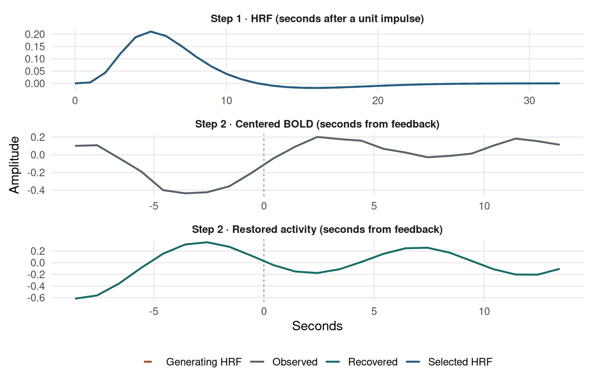
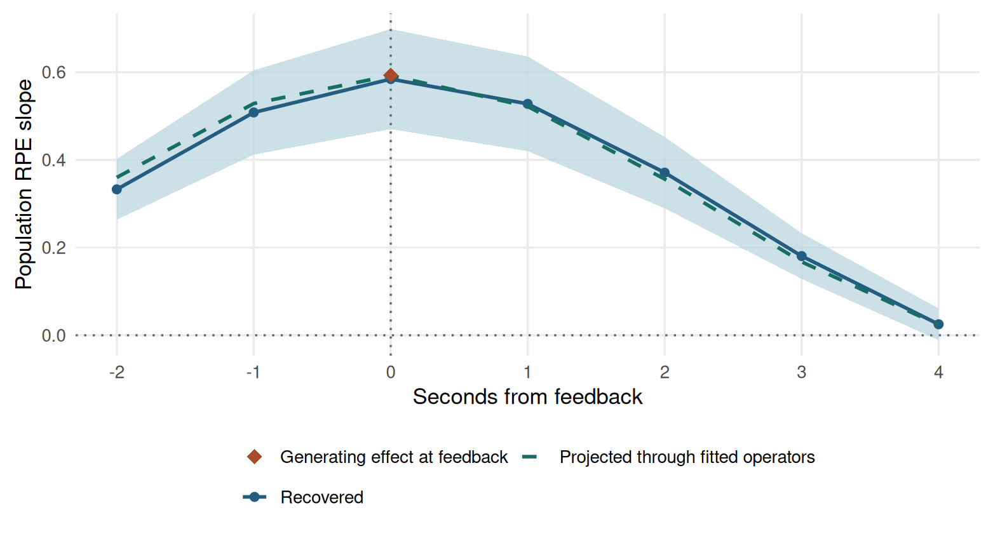
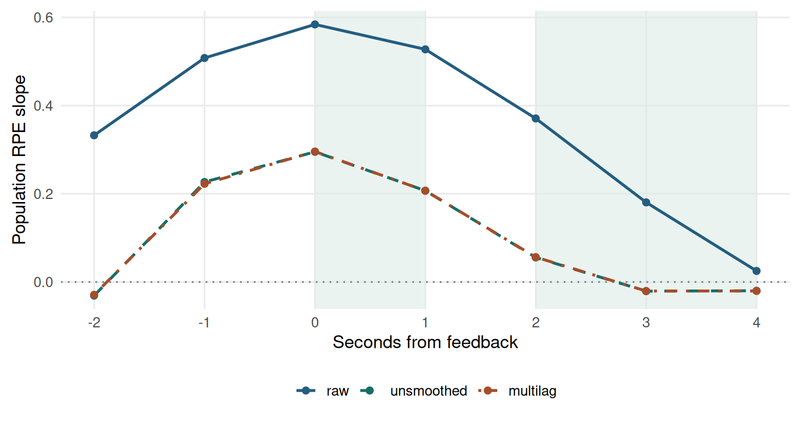

library(medusa)
hrf_fit <- estimate_crossrun_hrf(
bold, events, tr, candidates, amplitude_model = "trial",
noise_model = "ar1", evidence = "calibrated"
)
dec <- deconvolve_crossrun_hrf(
bold, hrf_fit, lambda = .1, scaling = "noise_sd", penalty = "sobolev",
nuisance_mode = "ignore", observation_mask = "fit"
)
epochs <- decon_epoch_regression(
dec, covariates, target_condition = "feedback", lags = -2:4,
parcel_groups = parcel_ids, restore_scale = TRUE,
demix_within_trial = FALSE, tau2_mode = "marginal", return_panel = TRUE
)A worked analysis from BOLD to a group claim
Suppose the primary question is whether signed reward prediction error predicts activity at feedback onset in a prespecified parcel. The teaching dataset has 12 independently simulated participants, three runs each, and 20 trials per run. Each trial contains a cue, a decision interval of variable duration, and brief feedback. Two parcels contain different synthetic voxels. RPE affects feedback activity in both parcels, so the example also shows why a shared task effect must be accounted for in a connectivity analysis.
The simulation source is the package workflow vignette (worked/workflow-source.Rmd), executed directly against library(medusa). The commands below trace the main pipeline handoffs across Steps 1–6; see Reproduction and references to regenerate the checkpoint outputs from scratch.
Fit the participant and keep the operators
The fixed penalty is a teaching choice. For a study, check the tuning rule and resolution under the actual timing. Inspect target-excluded training runs and HRF fallbacks. Keep acquisition rows with their original times and explicit validity masks. Verify that every feedback event_index maps to the same row in the behavioral data. Save the named list of participant epoch results so the trajectory and connectivity paths can retrieve their operator metadata.
Follow one trial through Steps 1–4
Follow participant sim01, run1, feedback trial 8, and Parcel A. In the original event table it is row 24, with feedback at 76.573 seconds. The parcel combines three voxel reconstructions. The diagnostic figure averages them in their original input units using the same weights as the parcel analysis.

- Learn. For run1 the HRF training runs are run2, run3. Check that run1 is absent from HRF selection. If shape estimates vary across training folds or fall back, compare the fallback and selected estimates under the same inverse settings. The target-run noise refit can still use run1.
- Invert. Inspect the observation mask, the scaling divisor, and the reconstruction around the event. The BOLD and activity panels use separate vertical scales. The inverse redistributes the signal over time and changes the noise. If a striking peak changes with the penalty, probe the resolution under that penalty before interpreting the peak.
- Align and correct. The table below shows what the readout returned at each lag for this trial. Compare
decon_rawanddecon_demixedto see the net correction. If the correction is large, inspect event overlap, support, and gain before carrying the estimate forward. - Assemble the panel. The realized parcel weights are 0.330, 0.316, 0.354. Verify that the same parcel still represents a comparable spatial unit when a voxel is unavailable in a later run. The SE in the table measures propagated error. The weight also includes a working component for latent trial variation. Keep the participant fit and event keys along with the panel.
| Lag (s) | Raw readout | Corrected | Measurement SE | Cohort weight |
|---|---|---|---|---|
| -2 | 0.304 | 0.707 | 0.087 | 3.599 |
| -1 | 0.185 | 1.288 | 0.087 | 2.174 |
| 0 | 0.028 | 1.420 | 0.087 | 1.721 |
| 1 | -0.104 | 1.052 | 0.087 | 2.168 |
| 2 | -0.165 | 0.317 | 0.087 | 3.852 |
| 3 | -0.140 | -0.523 | 0.088 | 9.934 |
| 4 | -0.041 | -1.129 | 0.087 | 26.321 |
Two ways to lose support
First, keep sim01’s acquisition grid and mask observations more than 5 seconds after its final run1 feedback. The last trial still has a lag-zero estimate, while later lags can lose enough observable HRF energy to be missing. This is a separate mask exercise on the last trial. Trial 8 above comes from the original fit.
Second, remove all of sim01’s +4 s activity readouts in a copy of the original participant panel. The group trajectory can still use sim01 at earlier lags. Count finite raw participant slopes from subjects to audit that support. In this implementation the group coefficient table’s n_subjects describes the retained trajectory cohort. It can stay at 12 when a particular lag has fewer contributing slopes.
| Lag (s) | Final trial after mask | Finite participant slopes after +4 s removal |
|---|---|---|
| -2 | -0.180 | 12 |
| -1 | 0.524 | 12 |
| 0 | 0.833 | 12 |
| 1 | Missing | 12 |
| 2 | Missing | 12 |
| 3 | Missing | 12 |
| 4 | Missing | 11 |
A missing trial is a support problem. Leave it missing, inspect whether support varies by condition or person, and report the lag-specific contributing sample before testing a window.
Fit the planned association
Use a trial-level mixed model with a participant random slope for the within-run predictor and a run intercept nested within participant. Select one parcel and lag before looking at the coefficient.
one <- group_panel[parcel == "Parcel_A" & evt_time == 0]
fit <- mixed_by(
one, model_formulae = list(
feedback = decon_demixed ~ rpe_within + (1 + rpe_within || id) + (1 | id:run)
),
weights = "precision_weight_cohort",
calculate = "parameter_estimates_reml", padjust_by = NULL,
return_models = TRUE
)This run retained 720 trial rows and 12 participants in the planned split. The estimated feedback slope was 0.574 in restored input units per RPE unit. The planned mixed model is singular. Inspect the random-effect variance components and report the boundary fit before making a population claim. The checkpoint simulation does not estimate error-rate calibration.
Interpret the lag profile
profile <- medusa_multilag_infer(
subject_epochs, covariates = "rpe", use_whitened = FALSE,
trajectory_mode = "none", contrast_source = "unsmoothed",
tr = tr, n_perm = 1999L, n_boot_latency = 0L, seed = 5420L
)
To make the dashed curve, generate only the BOLD contribution from the known feedback RPE effect. Apply each participant’s frozen inverse and the same epoch procedure, keeping the original scaling, observation mask, parcel weights, and trial weights. Then run the same group trajectory estimator on those projected readouts. Its group precision estimates can change because the response changed. This is a signal-only projection using the full event schedule and fitted operators. It shows what the fitted analysis can spread across lags even when the underlying source is brief. The difference between the two curves can also reflect other sources, estimation noise, and the fitted group weights. The blue simultaneous band applies to the estimated parcel–term lag family.
Compare one planned window on three curves
Compare mean activity slopes at +2 through +4 s with the mean at 0 and +1 s. Hold the participant data and the contrast weights fixed. Use trajectory_mode = "deblur_pspline" to expose the difference between deblurring and smoothing. The three curve options would coincide under trajectory_mode = "none".

| Contrast source | Late minus early | SE | 95% lower | 95% upper |
|---|---|---|---|---|
| raw | -0.36373 | 0.02382 | -0.41616 | -0.31131 |
| unsmoothed | -0.24618 | 0.03162 | -0.31578 | -0.17658 |
| multilag | -0.24623 | 0.03063 | -0.31364 | -0.17883 |
Choose raw for a contrast of the original lag estimates. Choose unsmoothed for the curve after any deblurring and before spline smoothing. Choose multilag for the fully processed curve. Deblurring changes the contrast more than spline smoothing in this example. The interval propagates the selected curve’s working covariance. Use the choice that matches the planned estimand and report it alongside the lag windows.
When a neural readout becomes a predictor
The two parcels respond to the same task variable. Keep the RPE main effect and use the full centered seed when estimating the interaction in this example. The generator lacks a designed PPI manipulation. It provides a check of how the analysis carries measurement error across the final handoff.
What survives stacking and CSV export?
The following fits use the same paired trials, full centered seed, and shared_error = "auto". The subject fit list preserves the participant cross-unit matrices. The stacked panel may keep scalar loadings even when it loses the matrix attributes. A full CSV round-trip can retain those scalar loadings. A compact export that omits the loadings has neither source of shared-error information, so the automatic correction uses zero.
| Input | Covariance used | Median error r | PPI slope | 95% interval |
|---|---|---|---|---|
| Participant fits | Participant matrices | 0.0017 | -0.00146 | [-0.0235, 0.0206] |
| Stacked panel | Loading products | 0.0017 | -0.00146 | [-0.0235, 0.0206] |
| Full CSV | Loading products | 0.0017 | -0.00146 | [-0.0235, 0.0206] |
| CSV without loadings | Zero fallback | 0.0000 | -0.00150 | [-0.0235, 0.0206] |
The median correlation summarizes the participant values actually used by the wrapper. The PPI slopes here may differ little because the generator uses independent voxel noise. The metadata comparison still identifies which error assumption each fit used. A zero fallback means the fit had no usable cross-error estimate. The connectivity chapter shows why that matters when shared errors are large or task-dependent.
Checkpoint code · Checkpoint results · Execution log · Worked-example execution log · Base worked-example script